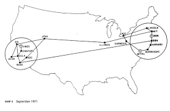
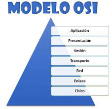
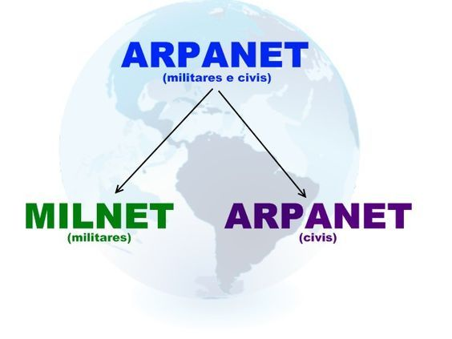

Línea del Tiempo Evolución de la Web
1957
ARPA: Se cuenta con el registro de la Agencia de Investigaciones Avanzadas (ARPA)
1961
LEONARD KLEINROCK: Publico desde el MIT el primer documento que redacto la teoria de conmutacion de paquetes.
1967
ALUNIZAJE: EL hombvre lega por primera vez a a la luna, lo cual marca el inicio de las comunicaciones globales.
1969

ARPANET: Se estableció por primera vez la primer conexión de computadoras, conocida como ARPANET entre tres universidades en California y una en Utah.
1983
CAMBIO: arpanet cambio el protocolo CNP por TCP/ip
1989

OSI: Se integran los protocolos OSI en la arquitectura de internet, facilitando el uso de distintos protocolos de internet.
1990

ARPAnet: Se desmantela ARPANET y de él aparecen:
MILNET: Carácter militar.
INTERNET: Accesible para todos.
1991
WWW y HTML: Tim Berners Lee, crea la Word Wide Web, mejor conocida como WWW.
Se propuso en ese mismo año un nuevo sistema de hipertexto para compartir documentos. (HyperText Markup Language) Lenguaje de marcas de hipertexto.
1991-2000
Web 1.0: Fundación de las empresas:
Amazon
Google
2000-2010

Web 2.0: Fundación de las empresas:
Facebook
Ajax
Amazon EC2
2010-2015

Wen 3.0: Liberación del HTML 5
Regresar al inicio